Το σημάδι "Οξεία" / The sign "Oxeia"
Στην παλαιά γραφή, νέα γραφή και προφορική παράδοση (πρόχειρη έρευνα)/ In old notation,
new notation and oral tradition (brief study)
Εισαγωγή / Introduction
Η πρόχειρη αυτή έρευνα έγινε στα πλαίσια διαδικτυακής συζήτησης που έλαβε χώρα στο Αγγλόφωνο φόρουμ
byzantinechant το 2005. Τα περισσότερα παραδείγματα συγκεντρώθηκαν από το Shota Gugushvili. Τα σχόλια είναι του Δημήτρη Κουμπαρούλη.
The following brief research was done for the purposes of a discussion that took place in the Enlgish-speaking forum
byzantinechant in 2005. Most image examples were collected by Shota Gugushvili and commented by Dimitri Koubaroulis.
Παράδειγμα 1: Ο τον Άδην Σκυλεύσας / Example 1: O Ton Adin Skylefsas
A well known phrase traditionally executed with oxeia
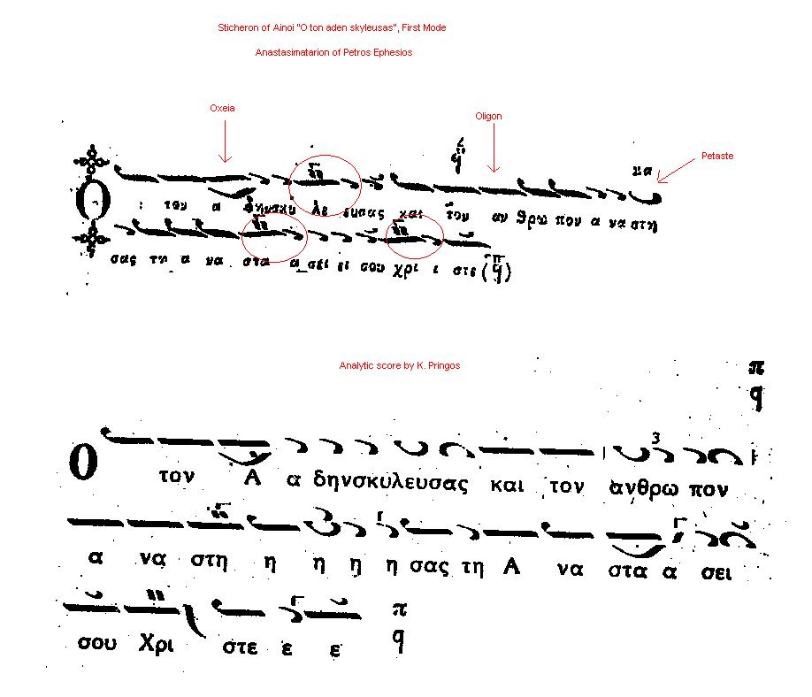
(Scores by Ephesios and Pringos. Click for larger)
Konstantinos Pringos
[
wma, 84 Kb]
Follows exactly his score.
Oxeia.
Thrasyvoulos Stanitsas
[
wma, 90 Kb]
Notice how he follows Pringos' version with a bit of extra additions.
Oxeia.
Leonidas Asteris
[
wma, 74 Kb]
Notice the difference in melodic lines from older protopsaltai.
Oxeia.
Maistores Choir (Prof. Gregorios Stathis)
[
wma, 300 Kb]
They follow Ephesios' score with no ornaments/analyseis at all.
Nothing.
Παράδειγμα 2: Δόξα Πατρί (Της Μετανοίας) / Example 2: Doxa Patri (Tis Metanoias)
Cases of oxeia executed by oral tradition instead of other signs
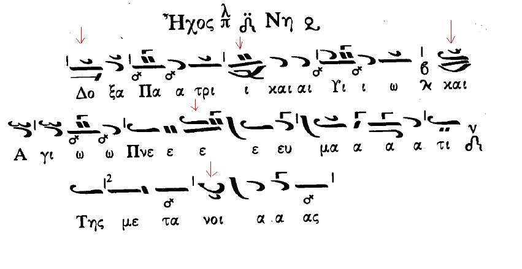
(Score from the book of Georgios Konstantinou using Karas' signs [details pending], click for original size)
Fr. Georgios Tsetsis
[
wma, 114 Kb]
Oxeia instead of omalon in -Do-xa
Oxeia instead of petaste in meta-noi
Dimitrios Magouris
[
wma, 135 Kb]
Omalon in -Do-xa
Petaste in meta-noi
Georgios K. Michalakis
[
wma, 85 Kb]
Nothing in -Do-xa
Subtle petaste in meta-noi
Παράδειγμα 3: Κυκλώσατε Λαοί Σιών / Example 3: Kyklosate Laoi Sion
Cases of Ephesios' "oxeia" and their interpretation.
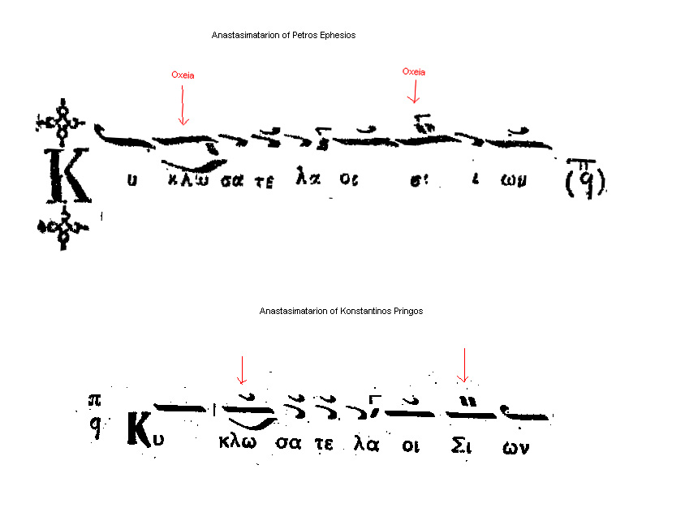
(click for original size)
Vasileios Emmanouelidis
[
wma, 38 Kb]
No oxeia.
Notice how kyr-Vasilakis follows the exact Ephesios' score in this thesis.
Georgios K. Michalakis
[
mp3, 126 Kb]
Oxeia done "from above".
No oxeia (Pringos analysis).
Ioannis Tsiotsiopoulos
(student of L. Angelopoulos, live from St. Irene)
[
mp3, 149 Kb]
Oxeia done "from above".
No oxeia (Ephesios analysis).
Notice the almost identical interpretation of the beginning of the phrase in the
two examples above.
Παράδειγμα 4: Την Παγκόσμιον Δόξαν / Example 4: Tin Pangosmion Doksan
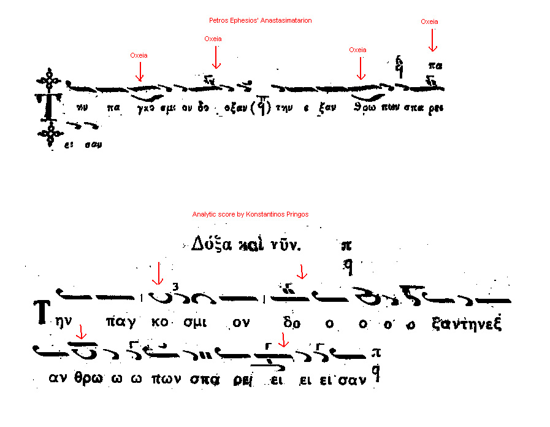
(click for original size)
Iakovos Nafpliotis
[
wma, 100 Kb]
No oxeia.
Oxeia done with "kentemata" but no gorgon and no parestigmenon.
Oxeia done by "sudden jump" to the note from below.
Oxeia done by "sudden jump" to the note from below, joined with the previous notes.
Vasileios Emmanouelidis
[
wma, 65 Kb]
No oxeia.
Oxeia done with "kentemata and gorgon" and parestigmenon.
Oxeia done "from above".
Oxeia done by "sudden jump" to the note from below.
Note: none of the above interpretations matches exactly Pringos' score. Here is
one that does:
Georgios K. Michalakis
[
mp3, 292 Kb]
No oxeia.
Oxeia done with "kentemata and gorgon" and no parestigmenon.
Oxeia done by "sudden jump" to the note from below.
Oxeia done by "sudden jump" to the note from below, joined with the previous notes.
Παράδειγμα 5: Ολίγον/Οξεία με Ψηφιστόν και επόμενους χαρακτήρες κατάβασης / Example
5: Oligon/Oxeia with psephiston (and klasma) followed by descending characters
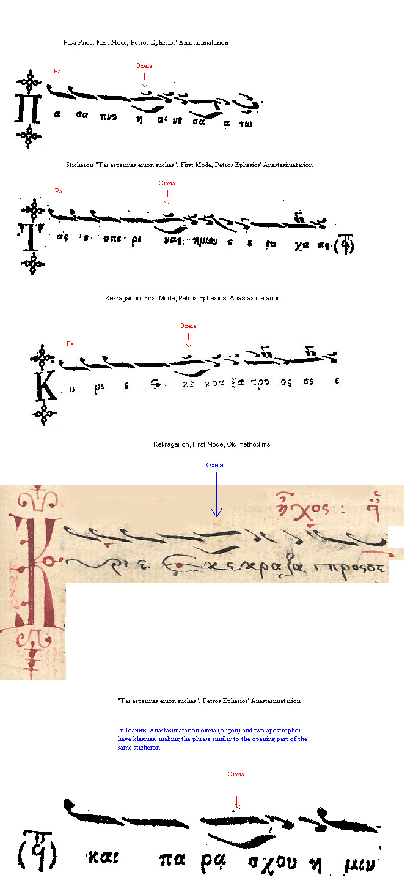
(click for original size)
Iakovos Nafpliotis
Pasapnoarion First Mode
[
mp3, 180 Kb]
Oxeia done "from above" with parestigmenon.
Thrasyvoulos Stanitsas
Tas Esperinas (a)
[
mp3, 130 Kb]
Oxeia done "from above", joined with the previous notes.
Thrasyvoulos Stanitsas
Tas Esperinas (b)
[
mp3, 97 Kb]
Oxeia done "from above".
Thrasyvoulos Stanitsas
Tas Esperinas (a)
[
mp3, 130 Kb]
Oxeia done "from above", joined with the previous notes.
Ioannis Hariatidis
Tas Esperinas (a)
[
wma, 97 Kb]
No oxeia.
Ioannis Hariatidis
Tas Esperinas (b)
[
wma, 130 Kb]
No oxeia.
Thrasyvoulos Stanitsas
Tas Esperinas (b)
[
mp3, 97 Kb]
Oxeia done "from above".
Lykourgos Angelopoulos
Tas Esperinas (a)
[
mp3, 130 Kb]
Oxeia done "from above".
Lykourgos Angelopoulos
Tas Esperinas (b)
[
mp3, 100 Kb]
Oxeia done "from above".
Georgios K. Michalakis
Tas Esperinas (a)
[
mp3, 133 Kb]
Oxeia done "from above" with parestigmenon.
Georgios K. Michalakis
Tas Esperinas (b)
[
mp3, 81 Kb]
Oxeia done "from above" with parestigmenon.
Iakovos Nafpliotis / Konstantinos Pringos
Kekragarion First Mode
[
mp3, 58 Kb]
Nafpliotis does oxeia with "kentemata" but no gorgon.
Pringos does oxeia with "kentemata and gorgon".
Thrasyvoulos Stanitsas
Kekragarion First Mode
[
mp3, 158 Kb]
Oxeia with "kentemata and gorgon".
Leonidas Asteris
Kekragarion First Mode
[
mp3, 140 Kb]
Tromikon instead of oxeia.
Ioannis Hariatidis
Kekragarion First Mode
[
wma, 41 Kb]
Oxeia with "kentemata and gorgon".
Fr. Dionysios Firfiris
Kekragarion First Mode
[
mp3, 58 Kb]
Oxeia done "from above" with parestigmenon.
Fr. Dositheos Katounakiotis
Kekragarion First Mode
[
mp3, 160 Kb]
No oxeia.
Harilaos Taliadoros
Kekragarion First Mode
[
wma, 68 Kb]
Oxeia with "kentemata and gorgon".
Lykourgos Angelopoulos
Kekragarion First Mode
[
mp3, 162 Kb]
Oxeia done "from above".
Παράδειγμα 6: "Κύριε" από το Μακάριος Ανήρ του Μανουήλ Πρωτοψάλτου / Example 6:
"Kyrie" from "Makarios Aner" of Manuel Protopsaltis
Comparative study reproduced from Thomas Apostolopoulos' published PhD thesis on
Apostolos Konstas. The same musical phrase is shown in the old (Petros) notation,
in the exegesis of Apostolos Konstas and in the exegesis of the Three Teachers.
Note that Apostolos replaces the "dynamis" effect of the oxeia using a Petaste and
the Three Teachers by Psephiston. Notice how three different notations want to describe
the same melody.
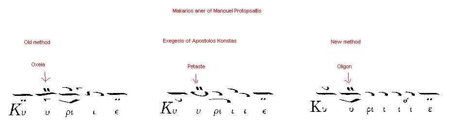
(click for original size)
The above musical phrase as performed by various psaltai. Notice how oral tradition
interprets this phrase.
Konstantinos Pringos
[
mp3, 189 Kb]
Panayotis Neochorites
[
wma, 62 Kb]
Παράδειγμα 7: "(Εισά)κουσόν" από το κεκραγάριο Β' ήχου του Ιακώβου / Example 7:
"Eisa(kouson)" from Kekragarion (Second mode) of Iakovos Protopsaltis
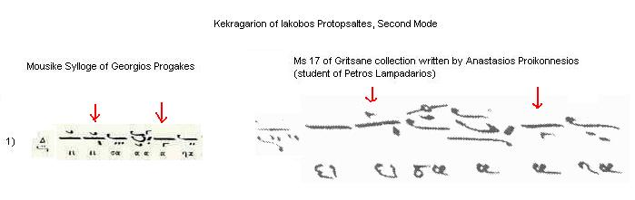
(click for original size)
Nafpliotis doesn't interpret petaste nor oxeia. Pringos interprets petaste but not
oxeia. They both analyse the haplai in the last ison.
Iakovos Nafpliotis/
Konstantinos Pringos
(Patriarchate)
[
wma]
Bold interpretation of petaste and oxeia at the end
Vasileios Nikolaidis (Patriarchate)
[
wma]
No petaste but personalised oxeia at the end.
Vasileios Emmanouelidis (Patriarchate)
[
wma]
Homalon-like interpretation of petaste and oxeia at the end.
Leonidas Asteris (Patriarchate)
[
wma]
Homalon-like petaste and personalised oxeia at the end.
Leonidas Sfikas (Chios)
[
wma]
Gradual stepping up for the oligon/kentema. Subtle quick interpretation of petaste.
No oxeia.
Dositheos Katounakiotis (Mt Athos)
[
wma]
Bold interpretation of petaste and personalised oxeia at the end.
Danielaioi Brotherhood (Mt Athos)
[
wma]
Notice how everyone interprets what Karas called "isaki" (gradual stepping up of
the first oligon) in this musical phrase. Karas puts a little ison before the oligon
to notate it.
Παράδειγμα 8: "Σοι Πρέπει" από το Πασαπνοάριο (Ά ήχου) Ιακώβου Πρωτοψάλτου / Example
8: "Soi prepei" from Pasapnoarion (First mode) of Iakovos Protopsaltis
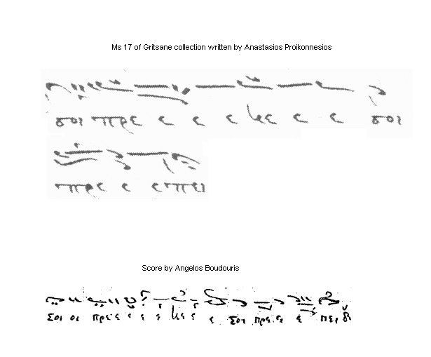
(click for original size)
Here notice how the oxeia is interpreted where it does not exist (e-ne) and it is
not interpreted where it exists (e-e-soi) in the old notation.
Vasileios Emmanouelidis (Patriarchate)
[
wma] (a)
[
wma] (b)
Thomades are more consistent with the old notation interpreting the oxeia only in
(e-e-soi) and not in (e-ne) although it is quite traditional to do so in theseis
like (e-ne) too.
Thomades Brotherhood (Mt Athos, live)
[
wma]
They interpret the petaste (pre-e) and the oxeia (e-ne) and another oxeia
(ne-e) and the psephiston (soi-pre).
Batopedi Fathers (Mt Athos, live)
[
wma]
Exactly as the Batopedi Fathers above, they interpret the petaste (pre-e) and the
oxeia (e-ne) and another oxeia (ne-e) and the psephiston (soi-pre).
Athonite Fathers Mt Athos, live)
[
wma]
Noone interprets the last two oxeiai (pre-) and (-epei) in the old text any differently
than a plain oligon with psephiston. In the old notation, in the last "soi pre-" the "soi" has vareia and the "pre-" has mikron ison, psephiston, oxeia and gorgon
(4 signs). In the new notation the vareia, mikron ison, gorgon and oxeia have all
disappeared therefore in this case the New Notation is less analytic (!) than the
old method. Cases like this one prompted Angelos Boudouris and Simon Karas to propose
enhancing the current notation.
Παράδειγμα 9: "Πεποικιλμένη" Πέτρου Λαμπαδαρίου / Example 8: "Pepikoilmeni" the
first Heirmos of the Katavasiai of the Dormition by Petros Lambadarios
The heirmos Pepoikilmeni in Petros' notation, Chrysanthos' score in the transitional
notation (1811) and Gregorios' score in the New method. Notice how Chrysanthos writes
Petros' two stand-alone oxeiai as oliga. I.e. even before the New method was invented,
oxeia was dropped, exactly as Dionysios Anatolikiotis says about Georgios the Cretan's
notation in his book about Chourmouzios (book details in the
Buy section). The scores are taken from the Proceedings of the First Conference organised
by the Institute of Byzantine Musicology (under Gregorios Stathis).
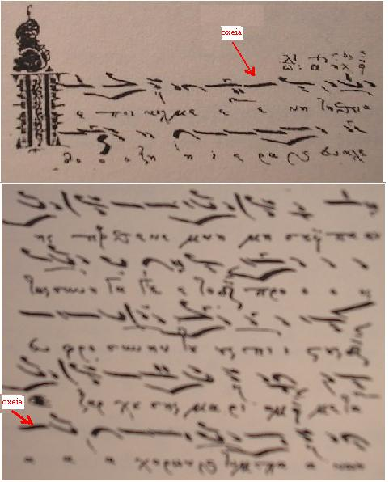
(click for original size)
The same heirmos in early analytic notation (Chrysanthos). The oxeia has been replaced
by oligon.
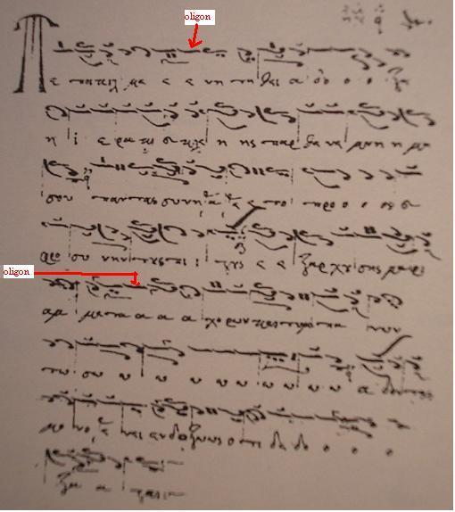
(click for original size)
The same heirmos in the notation of the 3 teachers (Gregorios Protopsaltis). The
oxeia has been replaced by oligon.
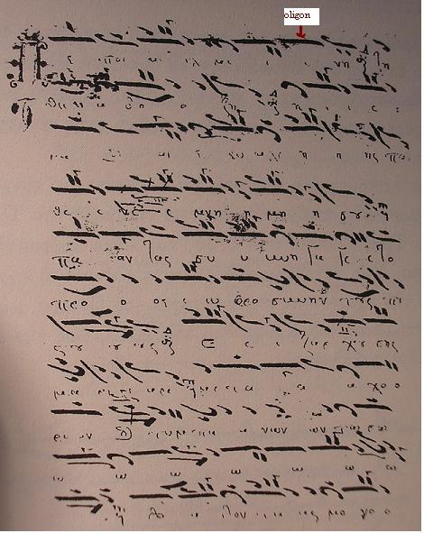
(click for original size)
Audio examples of the above heirmos.
Dimitrios Nerantzis
[
mp3, 65 Kb]
(offered by S. Gugushvili)
Georgios. K. Michalakis
From the Heirmologion of Chourmouzios (publ. 1825) trascription of Gregorios Protopsaltis.
[
mp3]
and using variations of rhythm [
mp3, 900 Kb]
(offered by Georgios Michalakis)
Παράδειγμα 10: Σύγκριση "Οξείας" Εφεσίου και Παλαιάς Γραφής / Example 10: Comparison
of Petros Ephesios "Oxeia" and the old notation
Examples collected by Shota Gugushvili
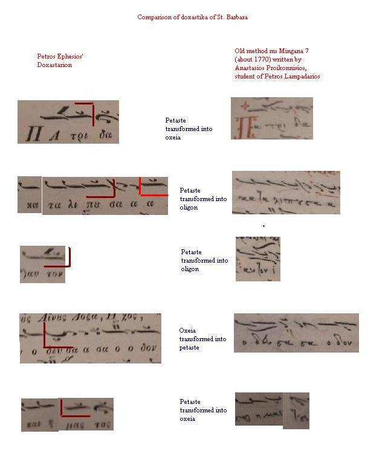
(click for original size)
Παράδειγμα 11: Οξεία πρίν από Πεταστή / Example 11: Oxeia before Petaste
Examples collected by Shota Gugushvili
Ms Iveron 1291 from the beginning of the 16th c. Oxeia is used before petaste twice
in the middle of the word and other time there's oligon before petaste.
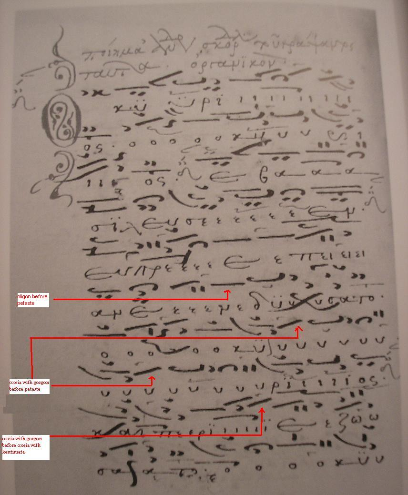
(from Emm. Giannopoulos' book, click for original size)
An autograph Anastasimatarion of Chrysaphes the New. Oxeia+Kentemata used before
petaste twice (the bottom line and the third one from the bottom)
[html](link
does not work anymore)
Παράδειγμα 12: Οξεία πρίν από Ολίγον / Example 11: Oxeia before Oligon
Examples collected by Shota Gugushvili
Ms 1 of the Thessaloniki university collection (Germanos' sticherarion) from 1771,
the scribe is Ioasaph Batopaidinos o Parios. Oxeia is found before oligon in the
middle of the word.
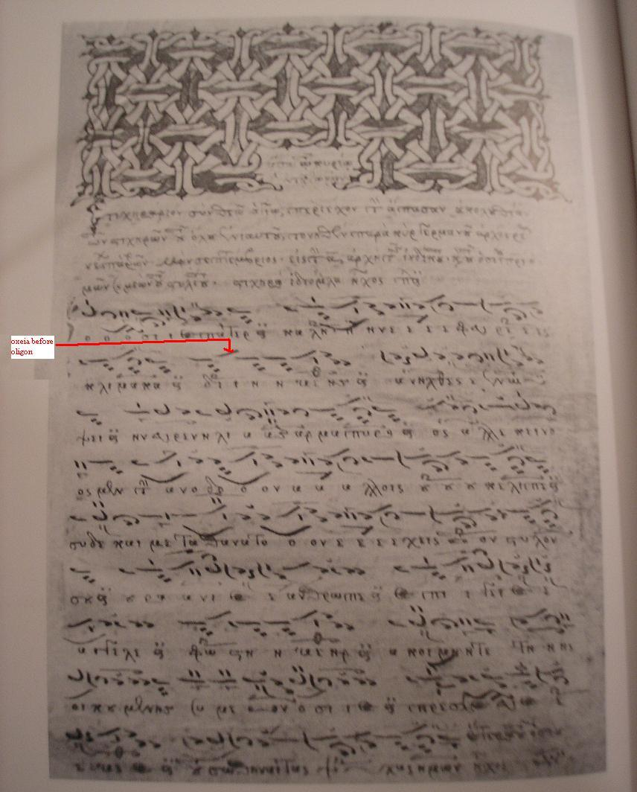
(from Emm. Giannopoulos' book,click for original size)
Ms EBE 963, a collection of Cretan melodies from the 17th c. Several instances of
oxeia before oligon (in combination with other characters). At least some of them
aren't at the end of the words or phrases.
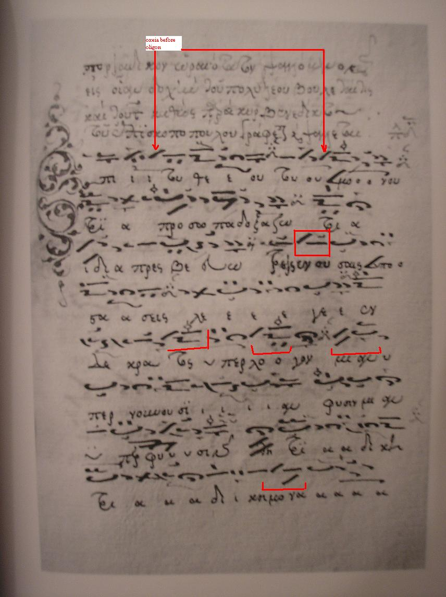
(from Emm. Giannopoulos' book, click for original size)
Here's one page from Theophanis Pantokratorinos' ms written in 1826 (his own analytical
notation). No oxeia (eothinon of Iakwbos):
[
html] (link doesn't
work)
Παράδειγμα 13: Ολίγον με Ψηφιστόν στην μεταβατική (πρό του 1814) γραφή / Example
13: Oligon with Psephiston in transitional (pre-1814) notation
An interesting excerpt from ms Karakallou 263 (transitional pre-New method notation)
where Olion with Psephiston are used and where Oxeia is not used (e.g. at the end
of "επορεύθη") though a special interepretation has been preserved by oral tradition.
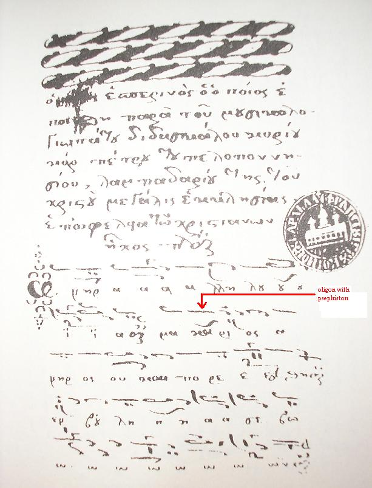(from Dimitrios Berykios' book [link pending],
click for original size)
Παράδειγμα 13: Άλλα παραδείγματα χρήσης ή μή Οξείας στην ίδια μουσική φράση / Example 13: Other examples where Oxeia is used or not in the same musical phrase
All the examples below are taken from Emmanuel Giannopoulos' book and one could
have extracted more.
Πρόχειρες αναφορές / Brief references
Αρχιμανδρίτης Χρύσανθος (εκ των 3 δασκάλων) / Archimandrite Chysanthos
(one of the 3 Teachers)
Translated by D. Koubaroulis (book/page pending)
"...the psefiston is enough to represent the emphasis on a character. Therefore
no need to subscribe the oligon as well. Because if the oligon is subscribed for
emphasis, why use the psefiston?"
Χουρμούζιος Χαρτοφύλαξ (εκ των 3 δασκάλων) / Chourmouzios Chartophylax
(one of the 3 teachers)
Chourmouzios mentions nothing about Oxeia in his theory book. Here is a sample from
an autograph of Chourmouzios, who seems to make use of the sign of Oxeia in his
manuscripts
[
pdf, 1Mb] (sample offered by Ioannis Arvanitis)
Πέτρος Εφέσιος (μαθητής των 3 δασκάλων) / Petros Ephesios (student
of the 3 teachers)
Ephesios also used the sign of Oxeia in the first ever printed books of Byzantine
Music (1820). Here is an example of the Kekragarion (First mode) [
jpg, 180 Kb]
Άγγελος Βουδούρης (μαθητής του Ιακώβου Ναυπλιώτη) / Angelos Boudouris
(student of Iakovos Nafpliotis)
"Eisagoge eis thn Byzantinen Mousiken" par. 182: "The psefiston, also known as
oxeia ("το λεγόμενον και οξεία"), is always written underneath
a quantity character and requires to pronounce the note in a somewhat more lively
manner than the next..."
Σίμων Καράς / Simon Karas
The main proponent for the restoration of Oxeia was Simon Karas (Methodos Ellinikis
Mousikis, Theoretikon, vol I, 1982). Karas views on Oxeia were reproduced
in Georgios Konstantinou's theory book [details pending].
Ιωάννης Αρβανίτης (μαθητής Σίμωνος Καρά) / Ioannis Arvanitis (student
of Simon Karas)
Based on the above case of Chourmouzios, some people have argued that the sign of
Oxeia could (or even should) be used in the New Method. For instance, read the introduction
of Ioannis Arvanitis' book "Akathistos Hymnos" [
gif, 100 Kb].
Λυκούργος Αγγελόπουλος (μαθητής Σίμωνος Καρά) / Lykourgos Angelopoulos
(student of Simon Karas)
Lykourgos Angelopoulos continued Karas' research (see some written and audio examples reproduced
on the site of Seraphim Kyritsis [
html].
Γεώργιος Κωνσταντίνου / Georgios Konstantinou
Here is a score of the Apolytikion "Tou Lithou Sfragisthentos" where Georgios Konstantinou
has replaced some oligon signs with oxeiae, according to the teaching of Simon Karas.
[
pdf, 40 Kb]
Δημήτριος Νεραντζής (μαθητής του Αθανασίου Παναγιωτίδη) / Dimitrios
Nerantzis (student of Athanasios Panagiotidis)
A follower of Karas and Angelopoulos in this respect (on the inappropriate rejection
of Oxeia). See some of his arguments are summarised in his article [
html]
from stanthonysmonastery.org.
Διονύσιος Ανατολικιώτης / Dionysios Anatolikiotis
Has written a book with 15 reasons why Chourmouzios did not intend to preserve the
effect of the "oxeia" sign of the old method (book details in the
Buy section).
Πρόχειρα συμπεράσματα (της πιό κάτω έρευνας) / Draft conclusions (from research below)
- Oral tradition sometimes and inconsistently executes oxeia when it is not written
in the new method.
- Traditional psaltai interpret oxeia without problems even when it is not written
in the text of the new method.
- Oral tradition sometimes and inconsistently does not execute oxeia when it is supposedly
written in the new method (e.g. by Ephesios).
- Oral tradition sometimes and inconsistently executes oxeia where it wasn't written
in the old method
- Oral tradition sometimes and inconsistently doesn't execute oxeia where it was written
in the old method.
- Old notation is not consistent in the notation of oxeia i.e. the same thesis is
often written with or without oxeia.
- The interpretation of oxeia by different psaltai is very often different and subject
to personal ornamentation style.
{kind=link}
{kind=link}
{kind=link}
{kind=link}
{kind=link}
{kind=link}
{kind=link}
{kind=link}
{kind=link}
{kind=link}
{kind=link}
{kind=link}
{kind=link}
{kind=link}
{kind=link}
{kind=link}
{kind=link}
{kind=link}
{kind=link}